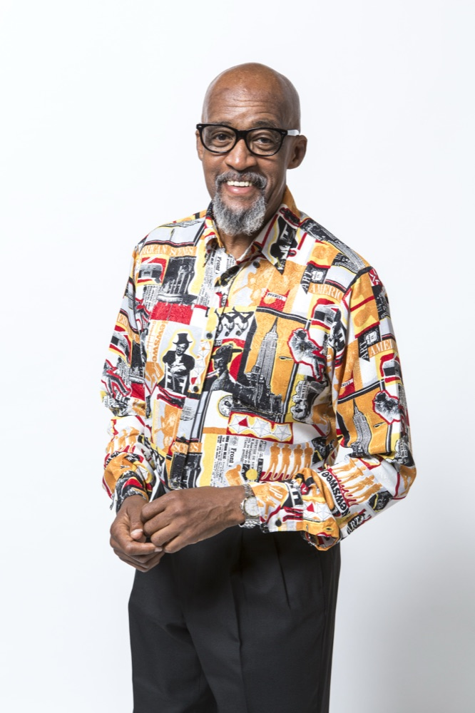
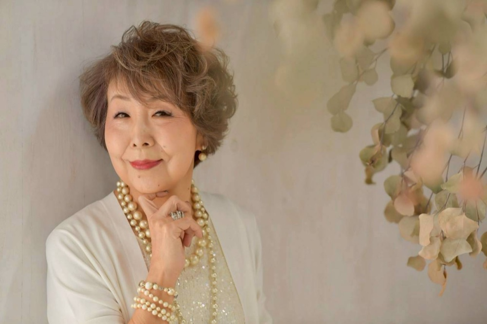

About Us
Voices of Vision — 名古屋のゴスペル・クワイア
Voices of Visionは、Founder（創設者）ラニー・ラッカー氏が提言している
"Music"、"History"、"Christianity" を体現し、
多くの人の心に届くよう、歌い続けていくことを目的に活動を展開している名古屋のゴスペル・クワイアです。
ゴスペルのルーツに根差した、本物のゴスペルを目指しています。
歌の喜びを仲間と分かち合う。オーディションなし・楽譜なし。音を聴いて覚えるスタイルで、誰もが音楽に参加できます。
ゴスペルが歩んできた歴史とルーツを学び、その背景にある物語とともに歌い継いでいきます。
ゴスペルの精神を尊重し、歌に込める。信仰の強制はありません。メンバーのうちクリスチャンは約2〜3割です。

Founder
Voices of Visionの創設者。"Music" "History" "Christianity" の3つの柱を提言し、ゴスペルのルーツに根差した本物のゴスペルを日本に伝え続けている。

Director
VOVの指導者として、メンバー一人ひとりの声を大切にしながらクワイアを導いている。
クワイアの華やかな高音を担うパート
ハーモニーの厚みを支える中音パート
土台となる低音を響かせるパート
このほか、VOV-Jr.（3歳〜中学生）、VOV-U25（高校生〜25歳）のクラスがあります。OB・OGの復帰も歓迎しています。
夜リハ・朝リハ・ユースの3つのリハーサルを月会費制で運用しています。
月会費制で運用しています。一般会員は月額4,000円で、夜リハ・朝リハ・ユースのどのリハーサルにも参加できます。
自分のライフスタイルに合わせて、参加しやすい時間を選んでください。
名古屋でゴスペルグループ創設（前身：名古屋ゴスペルクワイヤー）
「Voices of Vision」に改名。本格的な活動を開始
活動記録（History）のアーカイブを開始
在日大韓基督教会 名古屋教会7Fをリハーサル会場として利用開始
創設25周年。四半世紀にわたり名古屋のゴスペルシーンを支え続ける